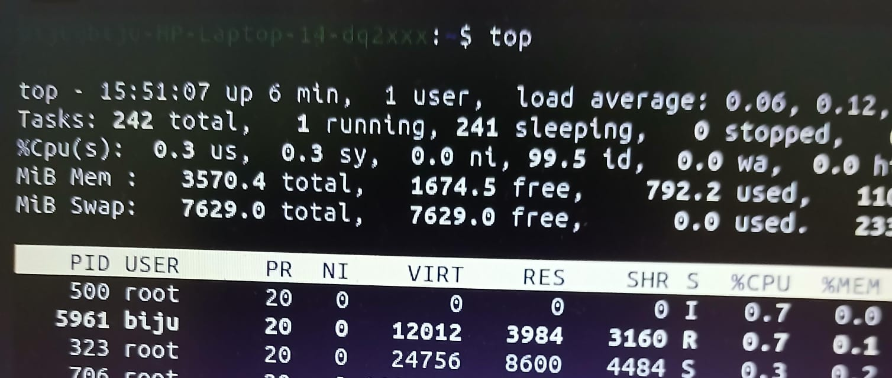
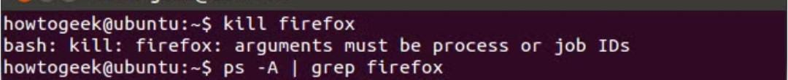
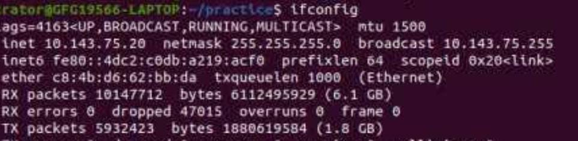
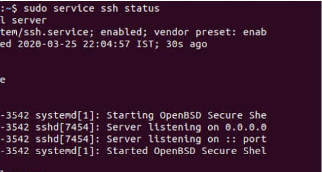
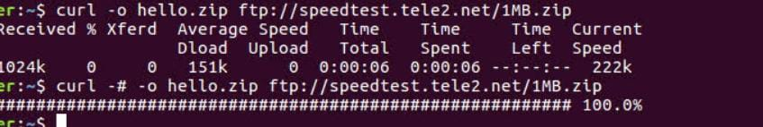
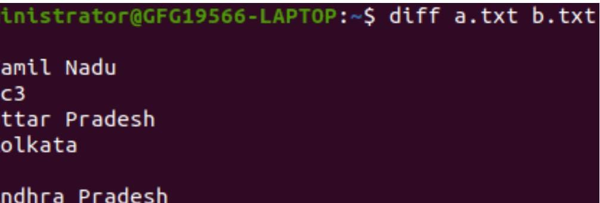
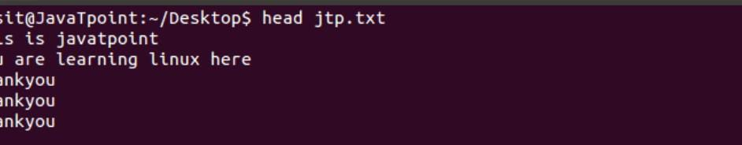
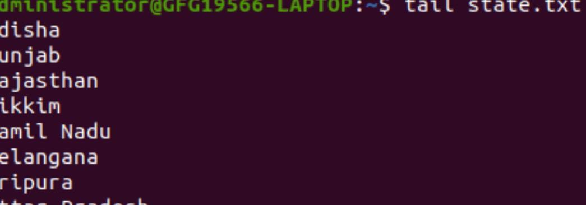

top
Displays real-time system statistics such as CPU, memory usage, and active processes.
Syntax:
top
Use Case: Monitor system performance and identify resource-intensive processes.
Example:
$ top

kill
Sends signals to processes, commonly used to terminate unresponsive ones.
Syntax:
kill [signal] PID
Use Case: Stop processes that are unresponsive or causing issues.
Example:
$ kill -9 12345

ifconfig
Displays or configures network interfaces on Linux systems.
Syntax:
ifconfig [interface]
Use Case: View network configuration or troubleshoot network issues.
Example:
$ ifconfig eth0

ping
Tests network connectivity between your machine and another host.
Syntax:
ping [options] host
Use Case: Diagnose network connectivity issues or measure latency.
Example:
$ ping -c 4 example.com
ssh
Establishes a secure connection to a remote system over a network.
Syntax:
ssh [options] user@host
Use Case: Remotely manage servers or devices securely.
Example:
$ ssh user@192.168.1.1

scp
Securely transfers files between local and remote systems using SSH.
Syntax:
scp source destination
Use Case: Transfer files securely between systems.
Example:
$ scp file.txt user@remote:/path
curl
Transfers data from or to a server using various protocols (e.g., HTTP, FTP).
Syntax:
curl [options] URL
Use Case: Test APIs or download files from the internet.
Example:
$ curl http://example.com

diff
Compares files line by line and outputs the differences.
Syntax:
diff [options] file1 file2
Use Case: Identify changes between two text files.
Example:
$ diff file1.txt file2.txt

head
Displays the first few lines of a file.
Syntax:
head [options] file
Use Case: Quickly view the beginning of a file.
Example:
$ head file.txt

tail
Displays the last few lines of a file.
Syntax:
tail [options] file
Use Case: View the end of a file, useful for log files.
Example:
$ tail -n 10 file.txt
